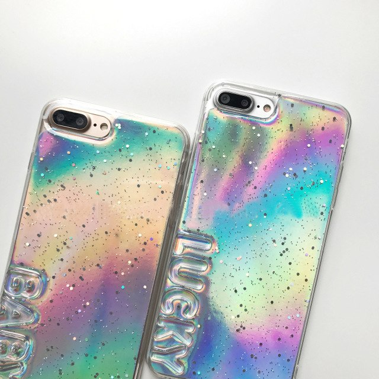

Test Apple iPhone 12 Pro : un smartphone maîtrisé aux ... Étuis et couvertures Sacs et sacs à dos ... MacBook (Retina, 12 po, début 2015 à 2017) Plus (Compatibilité Mac) Moins (Compatibilité Mac) Compatibilité ... Étui en silicone pour iPhone 11 - Vitamine C - Previous Gallery Image;
Étuis de luxe pour iPhone - LUCRIN SA Coque souple en caoutchouc de silicone liquide pour iphone 12 se 2020 11 11 pro 11 pro max xs max xr xs x 8 8 plus 7 7 plus $10.11 USD $8.79 (2)
Top 2 des méthodes pour obtenir les couvertures d'album ... Pudding Jelly Couleur Transparente pour iPhone 12 11 Pro Max X XR XS Max 8/7 6 6s plus souple SE2020 TPU transparent couverture usine. Vendeur: eastpalace (100.0%) De US $0.47 / Pièce; De US $0.49 / Pièce; Livraison Gratuite
iPhone 11, Coques d'iPhone, Recherche LightInTheBox Etuis iPhone 12 déjà en stock. Découvrez dès maintenant notre superbe collection d'étuis, de coques et de portefeuilles en cuir pour les 4 nouveaux iPhone 12 d'Apple : L'iPhone 12 mini, nouveau venu compact à glisser dans une de nos magnifiques housses slim ou à tirette
Cas et couvertures - Nouveautés – MiniInTheBox.com Etape 1 Télécharger le logiciel TunesGo pour commencer. Connecter votre iPhone ou autre appareil sur l'ordinateur et TunesGo le détectera automatiquement. Etape 2 Cliquer sur "Musique et sélectionner toute la musique pour laquelle vous voulez rechercher les couvertures. Faire un clic droit pour sélectionner "Réparer les informations musique" ce qui récupèrera les couvertures et ...
Ces couvertures de magazine ont été photographiées avec l ... Cas et couvertures > Coques d'iPhone > Partagez. Filtrer Par Tout Effacer. iPhone 11. ... étui magnétique pour apple iphone 12 11 xr étui de téléphone portable transparent 360 protection double face verre étui de protection par adsorption magnétique en métal pour iphone 11pro max se2020 xs.
iPhone Facile : Toutes les pochettes dans le Cover-Flow ... Vous cherchez des nouveaux Cas et couvertures à prix bas ? Nous avons des 2020 de la collection Cas et couvertures en solde aujourd'hui. Obtenez de nouveaux Cas et couvertures à super prix sur miniinthebox.com !
Ces couvertures de magazine ont été photographiées avec l’iPhone
2020.11.11 19:02

iPhone iPhone 12 / mini iPhone 12 Pro / Max iPhone SE (2020) iPhone 11 iPhone XR Quel iPhone choisir ? iPhone SE vs XR iPhone 11 vs SE iPhone 11 vs XR iPhone 11 vs 11 Pro iPhone 11 Pro vs 11 Pro Max Anciens modèles iPhone 11 Pro / Max iPhone XS iPhone XS Max iPhone X iPhone SE iPhone 8 iOS 14 Toutes les nouveautés Tous nos articles iOS 14 Forfait B&YOU Free Mobile RED by SFR VPN iPhone iPad iPad Pro 2020 iPad Air 2020 iPad 2020 iPad Air 2019 iPad 2019 iPad mini 2019 Quel iPad choisir ? iPad vs iPad mini iPad Air vs iPad iPad Air vs iPad Pro iPad Pro 2018 vs 2020 iPad Air 2020 vs 2019 iPad Pro vs MacBook Air Magic Keyboard iPadOS 14 Mac MacBook Air (2020) MacBook Pro 13″ (2020) MacBook Pro 16″ iMac (2020) iMac Pro Mac mini (2020) Mac Pro (2020) Quel Mac choisir ? iMac vs Mac mini MacBook Air vs MBP 13″ MacBook Air vs iPad Pro iMac vs iMac Pro macOS Big Sur VPN Mac Antivirus Mac Watch Apple Watch SE Series 6 Series 5 Series 3 vs Series 5 watchOS 7 App Actualités Applications Tests applications Jeux Actualités Jeux Tests Jeux Tutos Tests Fintech N26 Revolut Bon Plan VPN ExpressVPN CyberGhost NordVPN Surfshark VPN gratuit VPN pas cher iOS 14 : les nouveautés iPadOS 14 : les nouveautés macOS 11 Big Sur : les nouveautés Meilleures apps iPhone Meilleurs jeux iPhone et iPad Meilleur antivirus Intego Bitdefender Stockage Cloud pCloud Cloud gratuit Streaming Apple TV+ vs Disney+ Apple TV+ vs Amazon Prime Video Apple Music vs Spotify Apple Music vs Amazon Music Accessoires Écouteurs sans fil AirPods Pro vs Buds Live Pixel Buds vs AirPods 2 Powerbeats Pro vs AirPods Pro Sony WF-1000XM3 vs AirPods Pro HomePod Chargeurs iPhone Chargeurs sans fil iPhone 11 Coques iPhone 11 Film protecteur d’écran iPhone 11 Claviers iPad Accessoires iPad Pro Coque et film protecteur d’écran iPad Pro Télécharger fonds d’écran iPhone Comment enregistrer vidéo écran iPhone Banque d’images Forum Vipad iOS 14 : les nouveautés iPadOS 14 : les nouveautés macOS 11 Big Sur : les nouveautés Meilleures apps iPhone Meilleurs jeux iPhone et iPad Meilleur antivirus Intego Bitdefender Stockage Cloud pCloud Cloud gratuit Streaming Apple TV+ vs Disney+ Apple TV+ vs Amazon Prime Video Apple Music vs Spotify Apple Music vs Amazon Music Accessoires Écouteurs sans fil AirPods Pro vs Buds Live Pixel Buds vs AirPods 2 Powerbeats Pro vs AirPods Pro Sony WF-1000XM3 vs AirPods Pro HomePod Chargeurs iPhone Chargeurs sans fil iPhone 11 Coques iPhone 11 Film protecteur d’écran iPhone 11 Claviers iPad Accessoires iPad Pro Coque et film protecteur d’écran iPad Pro Télécharger fonds d’écran iPhone Comment enregistrer vidéo écran iPhone Banque d’images Forum Vipad Suivez-nous
iPhon.fr
Ces couvertures de magazine ont été photographiées avec l’iPhone
iPhone iPhone 12 / mini iPhone 12 Pro / Max iPhone SE (2020) iPhone 11 iPhone XR Quel iPhone choisir ? iPhone SE vs XR iPhone 11 vs SE iPhone 11 vs XR iPhone 11 vs 11 Pro iPhone 11 Pro vs 11 Pro Max Anciens modèles iPhone 11 Pro / Max iPhone XS iPhone XS Max iPhone X iPhone SE iPhone 8 iOS 14 Toutes les nouveautés Tous nos articles iOS 14 Forfait B&YOU Free Mobile RED by SFR VPN iPhone iPad iPad Pro 2020 iPad Air 2020 iPad 2020 iPad Air 2019 iPad 2019 iPad mini 2019 Quel iPad choisir ? iPad vs iPad mini iPad Air vs iPad iPad Air vs iPad Pro iPad Pro 2018 vs 2020 iPad Air 2020 vs 2019 iPad Pro vs MacBook Air Magic Keyboard iPadOS 14 Mac MacBook Air (2020) MacBook Pro 13″ (2020) MacBook Pro 16″ iMac (2020) iMac Pro Mac mini (2020) Mac Pro (2020) Quel Mac choisir ? iMac vs Mac mini MacBook Air vs MBP 13″ MacBook Air vs iPad Pro iMac vs iMac Pro macOS Big Sur VPN Mac Antivirus Mac Watch Apple Watch SE Series 6 Series 5 Series 3 vs Series 5 watchOS 7 App Actualités Applications Tests applications Jeux Actualités Jeux Tests Jeux Tutos Tests Fintech N26 Revolut Bon Plan VPN ExpressVPN CyberGhost NordVPN Surfshark VPN gratuit VPN pas cher
iPhone
Ces couvertures de magazine ont été photographiées avec l’iPhone
Il y a
4 ans,
le
19 avril 2017
Par
Pierre Otin Share Tweet
Le groupe d’édition de presse Condé Nast a utilisé pour la première fois des photos réalisées avec un iPhone 7 Plus pour la couverture de deux magazines et leur numéro du mois de mai. Il s’agit de Traveler et bon appétit . Ce n’est pas une nouveauté dans le monde des médias, d’utiliser l’iPhone pour de la photo ou de la vidéo, on se souvient d’une édition de Time Magazine avec photo faite à l’iPhone 4s , mais aussi de certaines chaines de télévision utilisant de plus en plus souvent le smartphone à la pomme pour leurs reportages :
Les capacités photos et vidéos des iPhone et autre smartphone concurrents ne cessant de s’améliorer au fil des ans, il paraît plutôt logique de voir ces appareils être utilisés dans certaines situations par des professionnels de l’image.
Dans le cas de Condé Nast, le magazine bon appétit affiche en couverture de l’édition du mois de mai une jeune femme tenant une glace en main, lunettes de soleil sur le visage. La photo a été prise à l’iPhone 7 Plus et l’auteur de cette dernière, Peden + Monk , explique que cela a permis lors du shooting, de créer une ambiance plus intimiste et avec moins de pression que les grosses séances nécessitant d’imposants appareils et plusieurs assistants sur place.
La prise de photo et les premières retouches de cette dernière ont été faites grâce à l’application iOS VSCO, disponible ici sur l’App Store et plusieurs fois mentionnée par les professionnels.
L’autre photo d’iPhone 7 Plus qui fait la couverture de magazine est à retrouver du côté de la revue Traveler . On y voit une barque échouée sur une plage de sable fin, devant l’écume de la mer.
S’agit-il de couvertures réussies selon vous ?
À lire également :
La couverture du magazine Bilboard réalisée avec mode portrait iPhone 7 Plus : le point de vue du photographe Une photo de l’ouragan Sandy réalisée avec un iPhone en couverture du Time Magazine BFM Paris : 1ère chaine de télé française à utiliser des iPhone pour ses reportages
Source
i-nfo.fr - App officielle iPhon.fr Par : Keleops AG 4.4 / 5 16,2 k avis App Store iPhone 7 Photo Pierre Otin
Rédacteur pour iPhon.fr, opérant parfois sous le pseudonyme de Snooz. Diplomé en techniques du son et en psychologie, mais aussi audiophile averti et grand navigateur sur la toile de l'internet. Pierre est tel Indiana Jones, à la recherche de l'astuce iOS perdue. Également utilisateur Mac de longue date, les appareils Apple n'ont en somme pour lui aucun secret. Pour me contacter : pierre[a]iphon.fr
Sur le même sujet
Ming-Chi Kuo parle déjà des caractéristiques de l’iPhone 13
Vidéo : la caméra de l’iPhone 12 Pro face à ses concurrents
iPhone : pourquoi un point vert s’affiche-t-il dans la barre du haut ?
7 Commentaires
7 Commentaires
Insomnia (posté avec l'app i-nfo.fr V2)
20 avril 2017 à 20 h 56 min
Ca reste une couverture photoshoper comme toujours donc d’un iPhone Android ou reflex même combat au final
Répondre
User1484219803995 (posté avec l'app i-nfo.fr V2)
20 avril 2017 à 1 h 25 min
Rien de transcendant puisqu’au bout du compte il y a toujours utilisation d’un sytème de retouche derrière donc appareil photo ou iPhone peu importe puisque les photos ne sont pas les originales.
Répondre
H (posté avec l'app i-nfo.fr V2)
19 avril 2017 à 22 h 49 min
Ca donne confiance pour le nouvel IPhone Edition !!!
Répondre
willl (posté avec l'app i-nfo.fr V2)
19 avril 2017 à 19 h 46 min
Effectivement Xperia fait 100fois mieux
Répondre
User1480788608741 (posté avec l'app i-nfo.fr V2)
19 avril 2017 à 19 h 04 min
Intéressant curieux de voir le résultat avec un Xperia
Répondre
Ucel_Toprak
19 avril 2017 à 18 h 50 min
Demain la même chose avec un Android ?
A non, on me signale que ce genre de “performance“ ne se fait qu’avec le maitre étalon des smartphone, pas avec les sous-fifres suiveurs.
😱
Répondre
User1475126576181 (posté avec l'app i-nfo.fr V2)
19 avril 2017 à 15 h 50 min
Apple, les meilleurs
Répondre
Laisser un commentaire
Annuler la réponse
Dernières news
Bons Plans Il y a 1 heure
Bon plan VPN : notre sélection des 3 offres du moment
Si vous voulez assurer votre sécurité sur Internet et naviguer sans contrainte, voici les 3 offres VPN du moment (à...
Mac Il y a 2 heures
Comment (re)voir la conférence “One more thing” d’Apple
48 minutes pour parler de M1 de MacBook et de Mac mini.
Mac Il y a 4 heures
Pas de Thunderbolt 4 sur les nouveaux MacBook
Pas de changement donc pour le MacBook Pro.
iPhone Il y a 5 heures
Affichez les entrailles de votre iPhone 12 avec ces fonds d’écran iFixit
Pour épater la galerie.
Apple Watch Il y a 7 heures
Cette app de l’Apple Watch peut aider à lutter contre le stress post-traumatique
La Food and Drug Administration vient d’approuver une application qui aide à traiter ce syndrome.
Les bons plans
Bons Plans Il y a 3 jours
Bon plan : NordVPN fait gagner jusqu’à 24 mois gratuits
NordVPN ne fait pas les choses à moitié ce week-end. En plus de sa remise (68%), des abonnements gratuits 1...
Bons Plans Il y a 4 jours
Apps gratuites, baisses de prix et promos du jour sur iPhone & iPad
Tous les jours depuis la création de l'App Store en 2008, nous publions une petite sélection des applications gratuites sur...
Bons Plans Il y a 4 jours
Forfaits mobile : top 3 de meilleurs offres du moment
Des offres jusqu'à 150 Go cette semaine.
Previous Post À propos Mentions légales Cookies Contact Sitemap
Apple, le logo Apple, iPod, iTunes et Mac sont des marques d’Apple Inc., déposées aux États-Unis et dans d’autres pays. iPhone et MacBook Air sont des marques déposées d’Apple Inc. MobileMe est une marque de service d’Apple Inc iPhon.fr et son forum ne sont pas liés à Apple et les marques citées sont la propriété de leurs détenteurs respectifs.